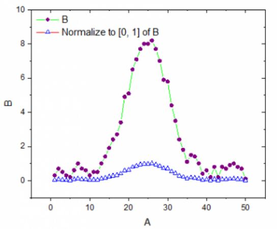
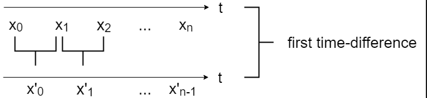
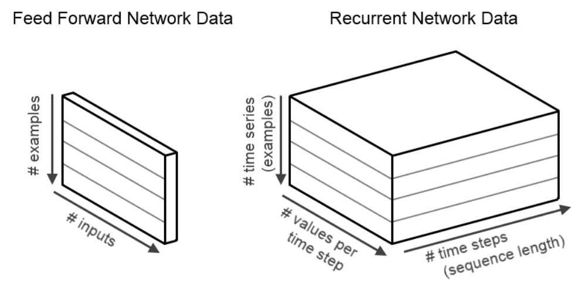
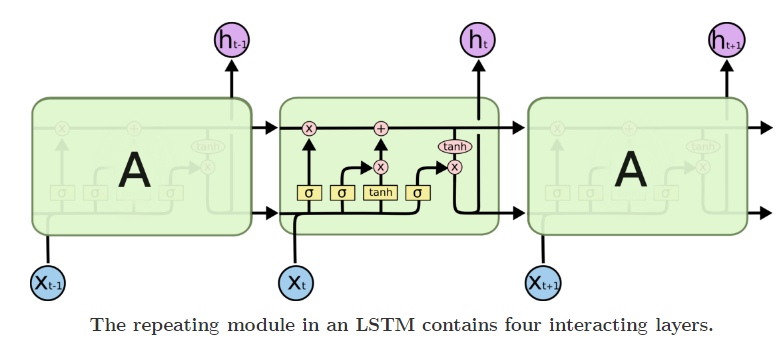
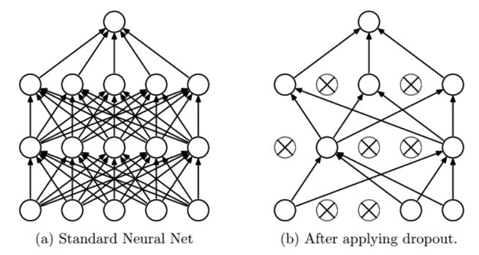
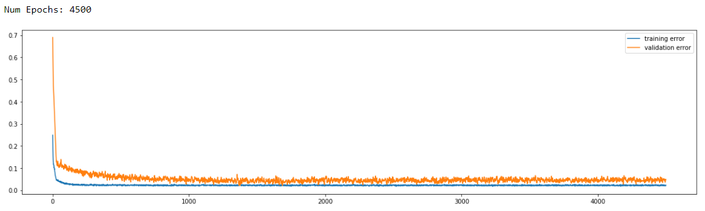
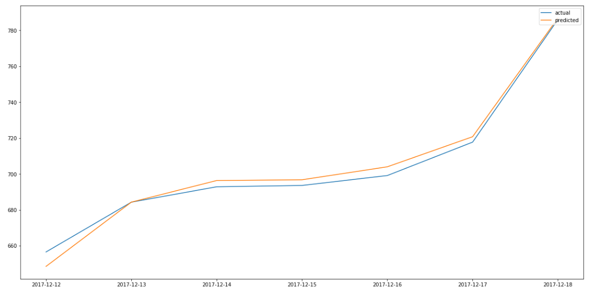

# Predict Ether Price with a LSTM RNN Note: * Introduce myself * Interested in ML, udacity capstone * Long-Short Term Memory Recurrent Neural Network * Predict 7 days into future
## Stephanie Marker > github.com/smarker > stephaniemarker.com > stephanie.marker93@gmail.com > software engineer at <svg xmlns="http://www.w3.org/2000/svg" version="1.1" height="55" width="55"> <rect height="55" width="55" fill="#f3f3f3"/> <rect height="25" width="25" x="2" y="2" fill="#F35325"/> <rect height="25" width="25" x="28" y="2" fill="#81BC06"/> <rect height="25" width="25" x="2" y="28" fill="#05A6F0"/> <rect height="25" width="25" x="28" y="28" fill="#FFBA08"/> </svg> Note: * Code and writeup on github
### June 2017 Note: * How many have heard of bitcoin? * How many have heard of ether? * Bitcoin largest by market cap followed by Ether </aside>
Note: * Blockchain relationship with ether * Decentralized digital ledger of transactions.
## Ether Price History <img src="images/ether-price.png"> Note: * Looked at price May 1 - Mid December
## Algorithm Overview 1. Analyze data for patterns 2. Feature Selection and Normalization 3. Create stationary timeseries dataframe 4. Split data into train and test 5. Test with multiple models (LSTM RNN, etc.) 6. Verify results Note: * Works for any time series problem * time series problem is time-dependent
| | Date | Price | eth\_tx | eth\_address | eth\_supply | ...| | - | ---------- | ------ | ------- | ------------ | ----------- |----| | 0 | 2017-12-18 | 785.99 | 984021 | 15048543 | 9.6364e7 |... | | 1 | 2017-12-17 | 717.71 | 876574 | 14830225 | 9.6343e7 |... | |...| ... | ... | ... | ... | ... |... | |289| 2017-3-1 | 77.53 | 112202 | 1663543 | 9.1228e7 |... | Note: * Patterns * Values spread out (normalize) * Price flat then trended up over time * May 1 - Dec 18
### Feature Selection (Top 5 Features) * Recursive Feature Elimination > price, eth_address, eth_supply, eth_marketcap, eth_hashrate ``` from sklearn.feature_selection import RFE from sklearn.ensemble import RandomForestRegressor from matplotlib import pyplot as plt # select top 5 features rfe = RFE(RandomForestRegressor(n_estimators=500,random_state=1,5)) fit = rfe.fit(X, y) ``` Note: * Select features by recursively selecting a smaller and smaller subset of features * Least important features are removed
## Define Normalization Function ``` from sklearn.preprocessing import MinMaxScaler def apply_minmax_scaling(train, test, features): SCALER = MinMaxScaler(feature_range = (-1, 1)) TRAIN_SCALED = SCALER.fit_transform(train) TEST_SCALED = SCALER.fit_transform(test) # convert numpy array to DataFrame TRAIN_SCALED = pd.DataFrame(TRAIN_SCALED) TRAIN_SCALED.columns = features TEST_SCALED = pd.DataFrame(TEST_SCALED) TEST_SCALED.columns = features return TRAIN_SCALED, TEST_SCALED, SCALER ``` Note: * The following functions are helpers that I will call later when using LSTM RNN * MinMaxScaler to scale feature values to a range (-1, 1) * Returns a numpy array (convert back to dataframe) * Necessary when values spread out so one feature doesn't outweigh another
## Example of [0, 1] Normalization  Note: * Green is not normalized * Triangles is normalized
## Define Stationizing (Differencing) Function  ``` def difference_ts(ts, interval=1): stationary_ts = ts.copy(deep=True) COLUMNS = ts.columns for column in COLUMNS: for i in range(interval, len(ts)): stationary_ts.loc[:, column][i] = \ ts.loc[:, column][i] - ts.loc[:, column][i - interval] return stationary_ts ``` Note: * Time series must be stationary * Stationary has constant mean, variance, autocorrelation
<img src="images/stationary.gif"> Note: * Stationary vs Non Stationary * Sometimes needs multiple time differencing to make stationary
## Train-Test Split * Prevent Look-Ahead Bias ``` def train_test_split(ts, test_set_size): TRAIN = ts[:len(ts) - test_set_size] TEST = ts[-test_set_size:] return TRAIN, TEST ``` Note: * cannot make use future data in training * using last 7 data points would introduce bias
## testing with multiple models ## a background on LSTM RNN Note: * Tested with multiple models (one was LSTM) * How many are familiar with neural networks? * Providing a background first
## Feed-Forward NN vs Recurrent NN | Feed Forward | Recurrent | | -------------- | ---------- | | info fed from input -> hidden -> output (no loops) | Loops | | primarily for supervised learning | supervised or unsupervised learning | | data not sequential/time dependent | learn sequential data | | no memory | memory | Note: * RNN part of LSTM * Need loops to remember
* Feed-Forward - 2D Input (samples, features) * LSTM RNN - 3D Input (samples, timesteps, features)  Notes: * Remember 3d (important for lstm algorithm)
## LSTM RNN > Forget gate, Input gate, Output gate  Note: * x = input, h = output * RNN - keeps track of state - multiple copies of the same network, each passing a message to a the next * Sigmas represent sigmoid f'n (outputs 0..1) (yellow) are the gates (layers) * Forget gate: what state to discard * Input gate: what new state to store * Output gate: what state to output * tanh push values between -1..1
## LSTM: Apply Stationizing, Normalizing Functions ``` def run_lstm(ts, len_test, epochs, batch_size, alpha, dropout): RAW = ts.copy( deep=True ) FEATURES = ts.columns # stationize STATIONARY = difference_ts(ts) STATIONARY_TRAIN, STATIONARY_TEST = \ train_test_split(STATIONARY, len_test) # normalize SCALED_STATIONARY_TRAIN, SCALED_STATIONARY_TEST, SCALER = \ apply_minmax_scaling(STATIONARY_TRAIN,STATIONARY_TEST,FEATURES) # ... ``` Note: * Explained differencing and normalizing earlier * Running lstm model passing in params (will explain params later)
## LSTM: Reshape as 3d ``` # ... train_X, train_y, test_X, test_y = input_output_split( SCALED_STATIONARY_TRAIN, SCALED_STATIONARY_TEST, 'Price') # copy before converting test x and test y to 3d for lstm test_X_copy = test_X.copy(deep=True) test_y_copy = test_y.copy(deep=True) # reshape [samples, timesteps, features] for lstm model train_X = reshape_as_3d(train_X) test_X = reshape_as_3d(test_X) fit_lstm_model(train_X, train_y, test_X, test_y, RAW, SCALER, \ FEATURES, epochs, batch_size, alpha, dropout) ``` Note: * split into train test * LSTM expects 3d data (features, values, time) * Fit model
## LSTM: Create Model, Configure Layers, Dropout ``` def fit_lstm_model(train_X, train_y, test_X, test_y, RAW, \ SCALER, FEATURES, epochs, batch_size, alpha, dropout): # ... for index, EPOCH in enumerate(EPOCH_LIST): model = Sequential() # LSTM hidden layer where input_shape is input layer model.add(LSTM(HIDDEN_LAYER_NUM_NEURONS, \ input_shape=(train_X.shape[1], train_X.shape[2]))) model.add(Dropout(dropout)) model.add(Dense(1)) model.compile(loss='mae', optimizer='adam') ``` Note: * epoch - one complete presentation of the data set to be learned to a model * more epochs is better usually - watch out for overtraining (dropout to counter) * will explain dropout in next slide
## LSTM: 0.5 Dropout  Note: * Dropout can prevent overtraining * randomly selected neurons are ignored during training * good because other neurons step in and have to help with prediction * 50% was recommended
## LSTM: Fit Model, Make Prediction ``` # Fit LSTM model history = model.fit(train_X, train_y, epochs=EPOCH, batch_size=BATCH_SIZE, validation_data=(test_X, test_y), verbose=0, shuffle=False) # make a prediction model_output = model.predict(test_X) ``` Note: * Fit, make prediction
## LSTM: Reshape as 2d ``` # reshape back to 2d test_X_2d = reshape_as_2d(test_X, FEATURES) test_y = pd.DataFrame(test_y) test_y.columns = ['Price'] ``` Note: * After making prediction, need to reshape to 2d (data was 2d originally)
## LSTM: Invert Normalization, Stationizing (Differencing) ``` # invert scaling on forecast predictions = invert_minmax_scaling(test_X_2d,model_output,SCALER) # invert differencing on forecast inverted = list() for i in range(len(predictions)): value = invert_time_difference(RAW['Price'], predictions[i], len(predictions) - i + 1 ) inverted.append(value) ``` Note: * Invert scalling, differencing
## LSTM: Verify Results with other models  ``` # compare actual results with predicted LSTM_actual = RAW[-TEST_SET_SIZE:]['Price'] LSTM_predicted = inverted ``` Note: * Training error should be lower than validation error (otherwise overfitting) * Training error and validation error should eventually stabilize and become parallel
> 4500 epochs, 32 batch size, 0.5 dropout  Note: * Want small batch size (number of samples propagated through network) * The higher the batch size, the more memory you need * 32 is around a month of data
## Resources * [Smarker/udacity-ml/projects/capstone/report.pdf](https://github.com/Smarker/udacity-ml/blob/master/projects/capstone/report.pdf) * [Udacity Machine Learning Nanodegree](https://www.udacity.com/course/machine-learning-engineer-nanodegree--nd009t) * [LSTM RNN](http://colah.github.io/posts/2015-08-Understanding-LSTMs/) * [Etherscan](https://etherscan.io/charts)